AI ต้องรู้ว่า“แบบไหนคือถูก” และต้อง“เห็น”หน้าจริง
ผมรีดีไซน์แอปเดสก์ท็อปทั้งแอปคู่กับ Claude Code ในงานประจำ — ถ้า AI ไม่รู้กติกาของทีม มันจะเลือกสีและระยะเอง ถ้าเห็นแค่ภาพแคป มันจะเดาว่ากรอบแดงคือชิ้นไหน แล้วเวลาของผมก็หมดไปกับการอธิบายซ้ำและพาหน้าไปอยู่ในเคสที่จะดู
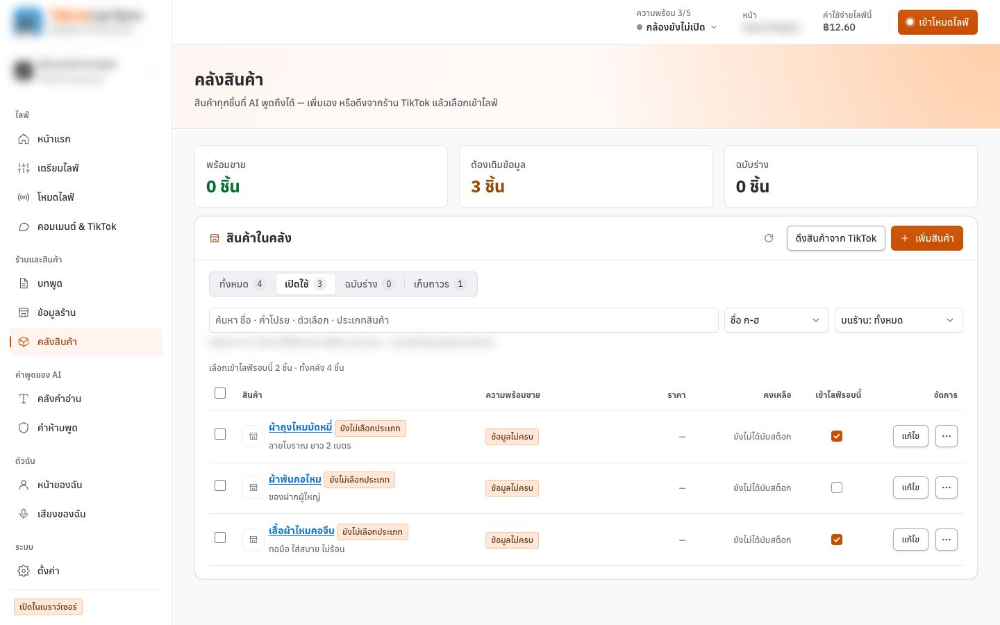
อยากดูว่าคลังว่างหน้าตาเป็นยังไง ต้องลบของทิ้ง อยากดูตอนมี 120 ชิ้น ต้องสร้างเพิ่ม อยากรู้ว่าธีมมืดเป็นยังไง ต้องไปหน้าตั้งค่า พอเจอจุดผิดก็ต้องแคปจอ วาดกรอบ แล้วพิมพ์อธิบายให้ AI อีกรอบว่า “ตรงนี้” คือตรงไหน
AI ไม่รู้ว่าแบบไหนคือถูกของทีม
ถ้าไม่บอก AI จะหยิบสี ระยะ และปุ่มที่ดูดีในแบบของมันเอง ได้หน้าที่สวยแต่ไม่เข้ากับโปรดักต์อื่นในทีม
Edge case ต้องสร้างด้วยมือทุกครั้ง
Empty state, ข้อมูลล้น, ชื่อยาวเกิน, ระบบตอบ error — ไม่มีปุ่มไหนพาไปได้ตรง ๆ ต้องแก้ข้อมูลจริงแล้วค่อยลบคืน
ไม่รู้ว่าหน้าไหนยังขาดเคสอะไร
เช็กลิสต์อยู่ในหัวหรือในเอกสารที่ไม่มีใครเปิด เลยตรวจเฉพาะเคสที่นึกออกตอนนั้น
ส่งงานแก้ให้ AI ด้วยภาพแคปกับคำบรรยาย
ภาพไม่บอกชื่อ component ขนาด หรือระยะห่าง AI ต้องเดา และการแคปแท็บของเบราว์เซอร์ต้องกดอนุญาตทุกครั้ง
แผงทดสอบลอยทับหน้าที่กำลังรีวิว
เครื่องมือ dev ที่วางในหน้าเองบังเนื้อหาที่จะดู และใช้ฟอนต์คนละชุดกับระบบออกแบบ
แก้สองชั้น แล้วใช้กับงานจริง 4 กรณี
ชั้นแรกคือกติกา ชั้นที่สองคือสายตา — ขาดชั้นไหน AI ก็ยังต้องเดา
- ชั้นที่ 1 · ให้ AI อ่านเล่ม Design System ที่ทีมเราดูแลก่อน — เล่มนี้ทีมเราสร้างและดูแลร่วมกัน เป็นภาษากลางของทุกโปรดักต์ในทีม AI อ่าน token, component และกฎของเล่มผ่าน skill แล้วแก้โค้ดโดยหยิบ component จากเล่ม
- ชั้นที่ 2 · เรียก AI ในเทอร์มินัลให้เปิด localhost — AI เห็นภาพหน้าจอ โครงหน้า และค่า style จริงของหน้าที่กำลังแก้ แก้เสร็จก็เปิดตรวจซ้ำเอง
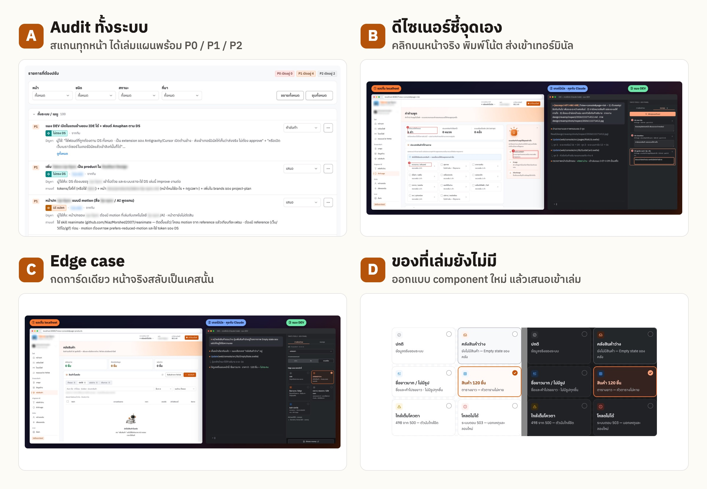
Audit ทั้งระบบ
skill audit สแกนทุกหน้าเทียบกับเล่ม ได้เล่มแผนพร้อมรายการแก้ P0 / P1 / P2 และภาพมาร์กจุด ดูเล่มแผน ↓
ดีไซเนอร์ชี้จุดเอง
คลิกชิ้นบนหน้าจริง พิมพ์โน้ต ส่งภาพกรอบเลขเข้าเทอร์มินัล ไม่ต้องกดอนุญาต ดูภาพ ↓
Edge case
กดการ์ดเดียว หน้าจริงสลับเป็นคลังว่าง · 120 ชิ้น · ชื่อยาว · ระบบล่ม (52 เคส 13 หน้า) แล้วให้ AI ตรวจเคสนั้น ดูภาพ ↓
ของที่เล่มยังไม่มี
ออกแบบ component ใหม่ เช่น การ์ดเลือกสถานะ แล้วยกกลับเข้าเล่มให้ทั้งทีมใช้ต่อ — ตอนนี้เปิด PR ให้ทีมรีวิวอยู่ ดูภาพ ↓
AI รับงานที่ต้องเดาไปน้อยลง ผมไม่ต้องอธิบายกติกาซ้ำหรือพาหน้าไปอยู่ในเคสเองทีละรอบ — เวลาส่วนใหญ่กลับมาอยู่ที่การตัดสินใจเรื่องดีไซน์
ให้ AI อ่านเล่ม Design System ก่อน แล้วAudit ทุกหน้าเทียบกับเล่ม
Design System เป็นของที่ทีมเราสร้างและดูแลร่วมกัน — AI อ่าน token, component และกฎของเล่มผ่าน skill แล้วใช้ skill audit ตรวจทุกหน้าเทียบกับเล่ม ผลออกมาเป็นเล่มแผนจาก template ของเล่มเดียวกัน รู้ตั้งแต่วันแรกว่าจะแก้อะไร priority เท่าไร และอยู่ขั้นไหนของงาน
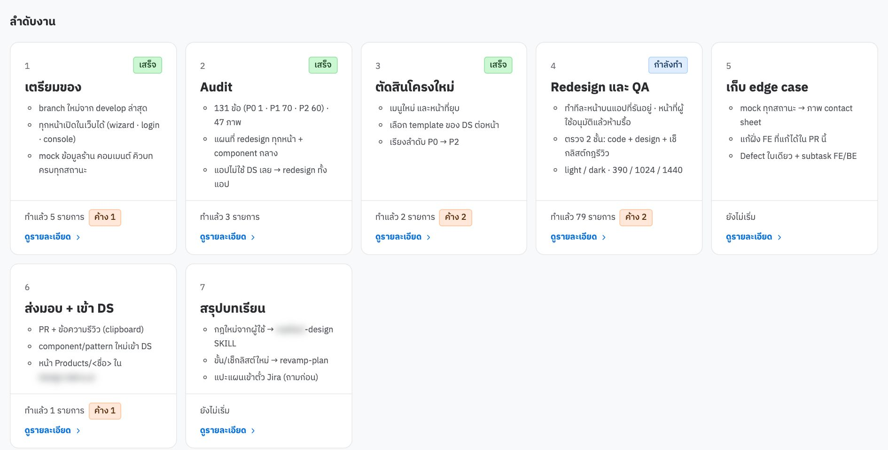
- เตรียมของ → Audit → ตัดสินโครงใหม่ — ตรวจทุกหน้าเทียบกับ Design System ได้ 131 ข้อ แยก P0 1 · P1 70 · P2 60 แล้วเลือก template ของ Design System ให้แต่ละหน้าก่อนวาดอะไรใหม่
- Redesign และ QA → เก็บ edge case — แก้ทีละหน้าบนแอปที่รันอยู่ ตรวจทั้งธีมสว่าง/มืดและจอ 390 / 1024 / 1440 แล้วไล่ทุกสถานะของหน้า — ตรงนี้คือที่มาของแผง DEV
- ส่งมอบ + เข้า Design System → สรุปบทเรียน — component ใหม่ที่เกิดระหว่างทางยกกลับเข้าเล่มผ่าน PR ให้ทีมรีวิว (กรณี D) และกฎใหม่จากการรีวิวกลายเป็นเช็กลิสต์ของรอบถัดไป
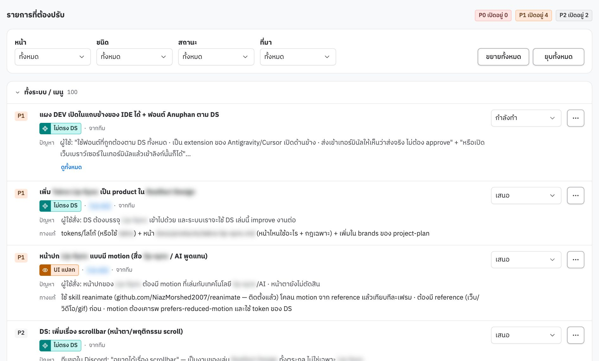
เรียก AI ให้เปิด localhost แล้วคุมหน้าจริงจากข้างนอก
AI ในเทอร์มินัลเปิดหน้าที่กำลังแก้ได้เอง เห็นภาพหน้าจอ โครงหน้า และค่า style จริง แก้เสร็จก็เปิดตรวจซ้ำเอง — และเพราะปัญหาส่วนใหญ่เกิดตอนชิ้นต่าง ๆ อยู่รวมกันบนหน้าจริง จึงคุมหน้าจริงให้อยู่ในเคสที่จะตรวจ แทนการแยก component ออกมาดูทีละชิ้น
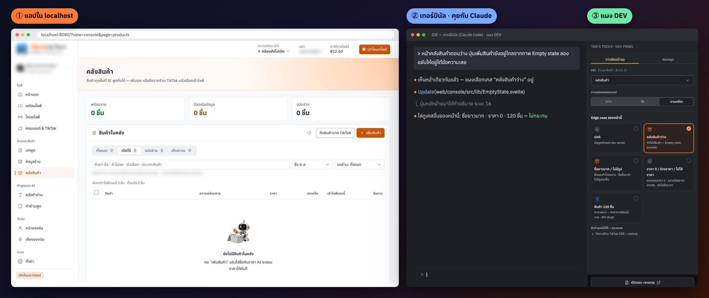
| ทางเลือก | เห็นอะไร | ต้นทุน | เหตุที่ตก / รับ |
|---|---|---|---|
| หน้าแสดง component แยก (แบบ Storybook) | ทีละชิ้น นอกบริบท | เขียน story ทุกสถานะ | เห็นชิ้นสวยแต่ไม่เห็นว่ามันชนกับอะไรบนหน้าจริง และต้องดูแลสองที่ |
| แก้ข้อมูลจำลองด้วยมือทุกครั้ง | หน้าจริง | หลายนาทีต่อเคส | ได้ภาพจริง แต่ช้า ลืมคืนค่า และคนอื่นในทีมทำซ้ำไม่ได้ |
| แผงคุมหน้าจริง + ไฟล์ edge case ต่อโปรเจกต์ เลือก | หน้าจริง ทุกเคสที่ประกาศไว้ | เขียนไฟล์ JSON ครั้งเดียว | dev server ตอบข้อมูลตามเคสที่เลือก หน้าจริงสลับในคลิกเดียว และไฟล์เดียวกันคือเช็กลิสต์ของทีม |
สามส่วนที่คุยกันผ่าน dev server ตัวเดียว
แอปอยู่ใน Chrome แผงอยู่ใน IDE ส่วน AI อยู่ในเทอร์มินัล — ไม่มีใครต้องรู้จักใครตรง ๆ
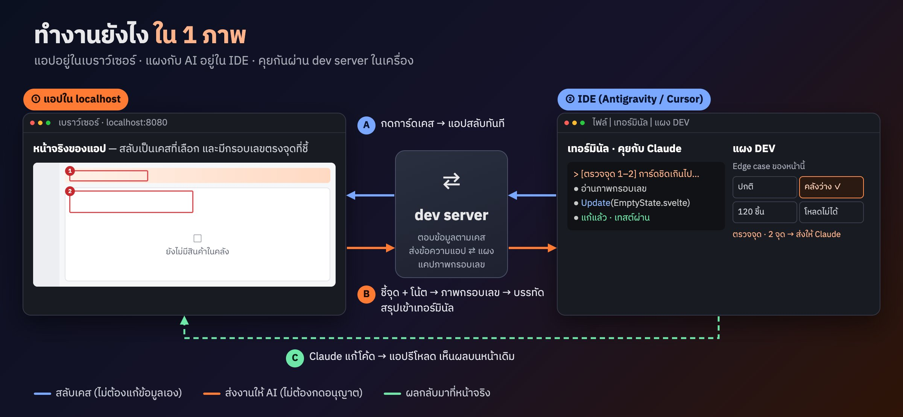
- ส่วนขยาย IDE — webview ในแถบข้างขวาของ Antigravity / Cursor / VS Code ฝังหน้าแผงไว้ และเป็นคนเดียวที่พิมพ์ลงเทอร์มินัลได้
- dev server — ท่อข้อความแบบ SSE ให้แผงกับแอปคุยกันข้ามเบราว์เซอร์ · ตอบ API ตามเคสที่เลือก · รับรายงานจุดที่ต้องแก้แล้วแคปภาพเอง
- ไฟล์ edge case ต่อโปรเจกต์ — หน้าตามเมนูจริง · เคสของแต่ละหน้าพร้อมข้อมูลที่ API ต้องตอบ · เคสที่ยังจำลองไม่ได้เป็นรายการให้ตรวจเอง · ลิงก์เล่มแผนรีดีไซน์
- ระบบออกแบบเดียวกับแอป — แผงใช้ฟอนต์ สี และ component จากเล่ม Design System ชุดเดียวกับแอป — การ์ดเลือกสถานะที่ออกแบบเพิ่มกำลังยกเข้าเล่ม (เปิด PR ให้ทีมรีวิว)
วิธีใช้ — 5 จังหวะ จากเลือกหน้าถึง AI ลงมือแก้
มือไม่ต้องออกจาก IDE และไม่มีหน้าต่างขออนุญาตเด้งขึ้นมาเลย
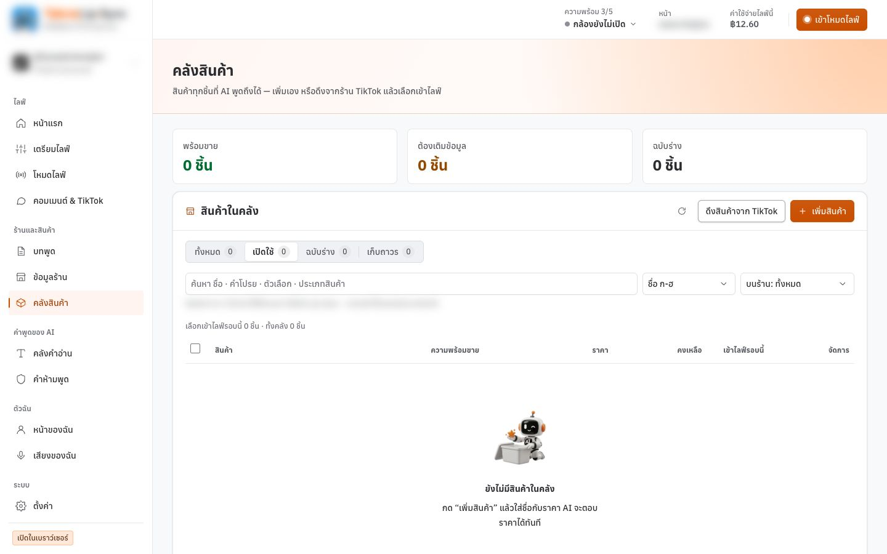
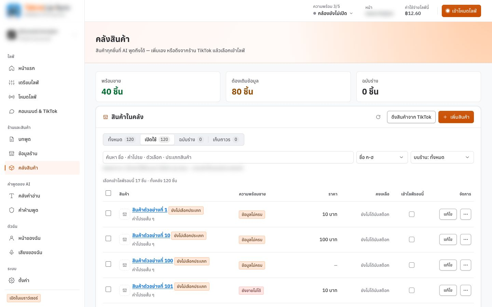
เลือกหน้า
ช่องเลือกหน้าเรียงตามเมนูจริงของแอป กดถัดไปเพื่อเดินทั้ง flow ทีละหน้า
กดการ์ด edge case
dev server เปลี่ยนคำตอบของ API ตามเคส แล้วหน้าแอปโหลดใหม่ — เปลี่ยนหน้าเมื่อไรเคสล้างเอง
สลับธีมของแอป
สว่าง · มืด · ตามเครื่อง เขียนลงค่าธีมของแอปตรง ๆ ตรวจครบทั้งสองธีมจากจุดเดียว
ชี้จุดที่ต้องแก้
คลิกชิ้นบนหน้าจริง กด ↑ เพื่อขยายไปกล่องแม่ ได้กรอบสีแดงพร้อมเลข แล้วพิมพ์ว่าจะแก้อะไร
ส่งให้ Claude
แคปภาพมีกรอบเลข เพิ่มเข้าเล่มแผน และพิมพ์บรรทัดสรุปลงเทอร์มินัลพร้อมที่อยู่ภาพ — AI เริ่มทำงานทันที
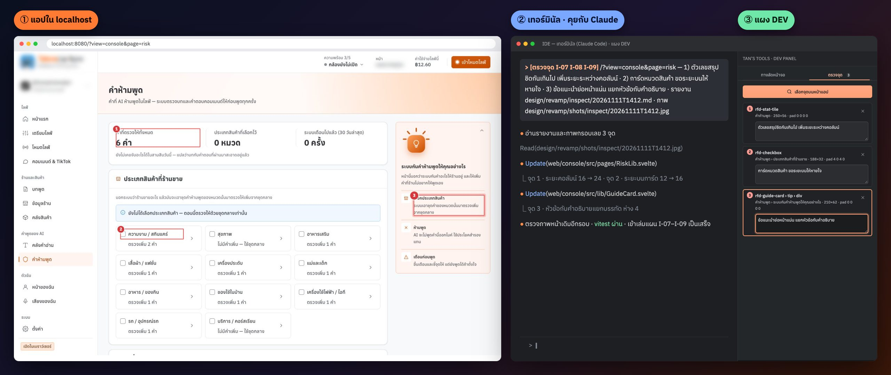
หกข้อที่เจอระหว่างทาง
ส่วนใหญ่เป็นข้อจำกัดของเบราว์เซอร์และ IDE ที่เห็นก็ต่อเมื่อย้ายแผงออกจากหน้าแอปจริง ๆ
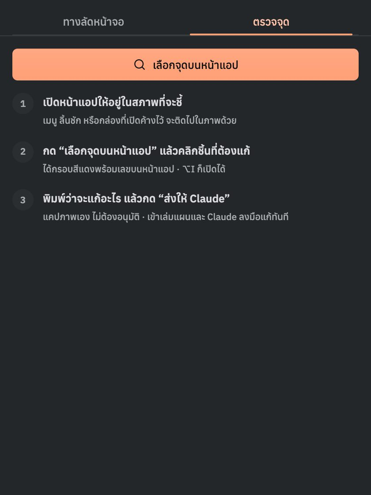
การแคปแท็บจากเบราว์เซอร์ต้องกดอนุญาตทุกครั้ง
ตอนแรกใช้ getDisplayMedia แคปแท็บตามสภาพจริง แต่ Chrome ถามสิทธิ์แชร์หน้าจอทุกรอบ ส่งงานบ่อยเข้าก็กลายเป็นกดอนุญาตทั้งวัน
BroadcastChannel คุยได้แค่ในเบราว์เซอร์เดียว
พอย้ายแผงไปอยู่ใน IDE แผงกับแอปกลายเป็นคนละเบราว์เซอร์ ปุ่มถัดไปกดแล้วไม่มีอะไรเกิดขึ้น
iframe ใน webview ของ IDE ถูกแยก storage
แผงเคยจำหน้าของแอปไว้ใน localStorage แต่ใน IDE ค่าไม่ติด แผงเลยรีโหลดตัวเองวนไม่จบ
เปิดแอปสองแท็บ แผงรีโหลดสลับไปมา
ทั้งสองแท็บตอบ url ทุกวินาที แผงตามแท็บหนึ่ง แล้วอีกแท็บก็ดึงกลับ
ตัวเช็กว่า server รันอยู่ ถูก CSP ของตัวเองบล็อก
webview บล็อก fetch ไป localhost ตัวเช็กเลยเข้าใจว่า server ไม่รัน แล้วซ่อนแผงทิ้งทั้งที่ทุกอย่างพร้อม
connect-src ให้ localhost — บทเรียนคือข้อความ error ที่ผิดทาง แย่กว่าไม่มีข้อความเช็กลิสต์ที่ติ๊กได้ ไม่ช่วยให้ตรวจเร็วขึ้น
รอบแรกทำ edge case เป็นช่องติ๊กพร้อมปุ่ม “ดูบนหน้า” ผู้ใช้ (ตัวผมเอง) บอกว่าลำดับข้อมูลผิด เพราะสิ่งที่อยากได้คือการ์ดที่กดแล้วหน้าจริงสลับ ไม่ใช่การติ๊ก
ไฟล์ edge case คือเช็กลิสต์ที่รันได้
เขียนเคสครั้งเดียว ใช้ได้ทั้งตอนออกแบบ ตอนรีวิว และตอนส่งต่อให้ทีม
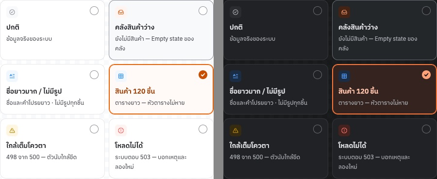
- เคสอยู่ในไฟล์ของโปรเจกต์ — แต่ละโปรเจกต์มี Empty state และ edge case ไม่เหมือนกัน แผงอ่านไฟล์ของโปรเจกต์ที่เปิดอยู่
- ไล่ทุกเคสอัตโนมัติ — สคริปต์เปิดทุกการ์ดทุกหน้า เช็ก error แล้วทำภาพรวมทุกเคสในภาพเดียว
- รายงานจุดแก้เข้าเล่มแผน — 1 จุด = 1 รายการ พร้อมภาพกรอบเลขแบบเดียวกับผลสแกนอัตโนมัติ ทีมเห็นในที่เดียวกัน
ขอบเขตที่ตั้งใจไม่ทำ
เครื่องมือสำหรับคนทำงาน ไม่ใช่ฟีเจอร์ของผลิตภัณฑ์ — และยังมีส่วนที่ไม่ครบ
- ยังไม่ใช่ component ของเล่มทุกชิ้น — แก้ด้วย component จากเล่มก่อนเสมอ แต่แอปยังมีสไตล์เฉพาะตัวที่ทยอยยกเข้าเล่ม ชิ้นไหนทีมควรใช้ร่วมกันก็เปิด PR ให้ทีมรีวิวเหมือนการ์ดเลือกสถานะ
- อยู่แค่ใน dev server — ไม่เข้าแอปที่ส่งถึงลูกค้า — แผงและการตอบ API แทนของจริงมีเฉพาะตอนพัฒนา
- ไม่แคปภาพจากกล้องหรือวิดีโอ — ภาพที่วาดจาก DOM ไม่มีเนื้อหาของ canvas/video — เคสที่ต้องใช้กล้องจริงเหลือเป็นรายการตรวจเอง
- ไม่ส่งอะไรออกนอกเครื่อง — รายงานและภาพอยู่ในโปรเจกต์ ข้อความเข้าเทอร์มินัลในเครื่อง ไม่ผ่านบริการภายนอก